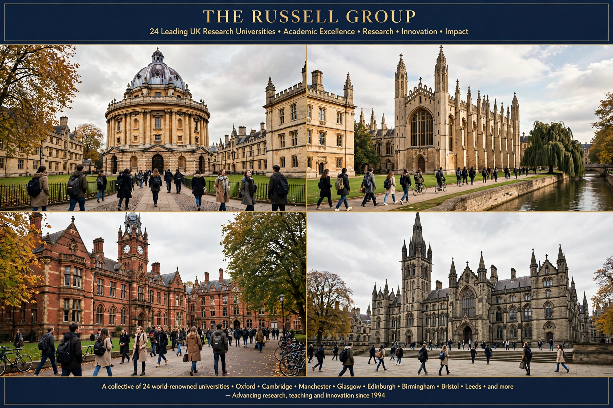

The Russell Group is an association of 24 public research universities in the United Kingdom, headquartered in London. Founded in 1994, it represents research-intensive universities that receive a disproportionate share of UK research funding and are often compared to the Ivy League in the United States.

| Formation | 1994 |
|---|---|
| Type | Association of universities |
| Headquarters | London, United Kingdom |
| Membership | 24 universities |
| Chair | Chris Day (from 2023) |
The group was founded in 1994 by 17 universities meeting informally at the Hotel Russell in London — hence its name. It was incorporated in 2007. Cardiff University and Queen's University Belfast joined, and other members were added over time, bringing membership to 24 by 2012 with the addition of Durham, Exeter, Queen Mary University of London and York.
Members include the University of Oxford, University of Cambridge, Imperial College London, London School of Economics, University College London, King's College London, and universities in Birmingham, Bristol, Edinburgh, Glasgow, Leeds, Liverpool, Manchester, Newcastle, Nottingham, Sheffield, Southampton and Warwick, among others.
The group lobbies government on higher education funding, research policy and admissions. Its members award around 60% of UK doctorates and receive a large share of research grant income. Critics argue its influence reinforces a hierarchy in British higher education and disadvantages talented students from under-represented backgrounds, though members point to widening-participation programmes.